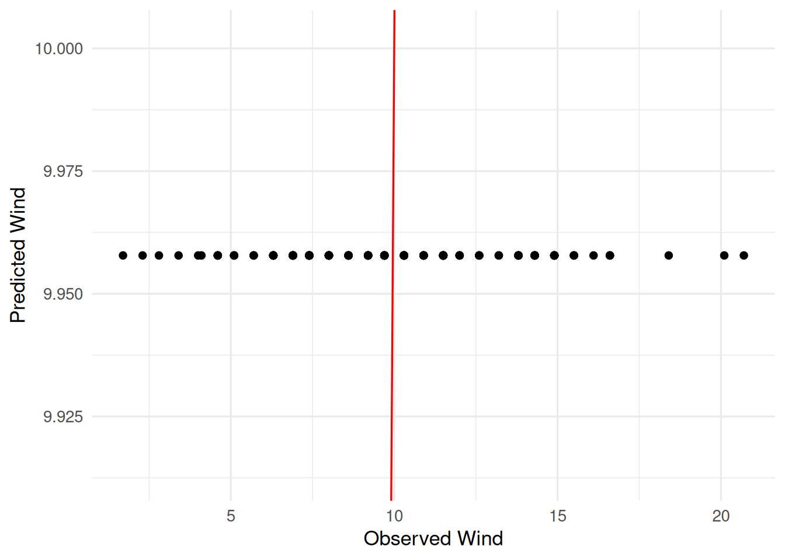
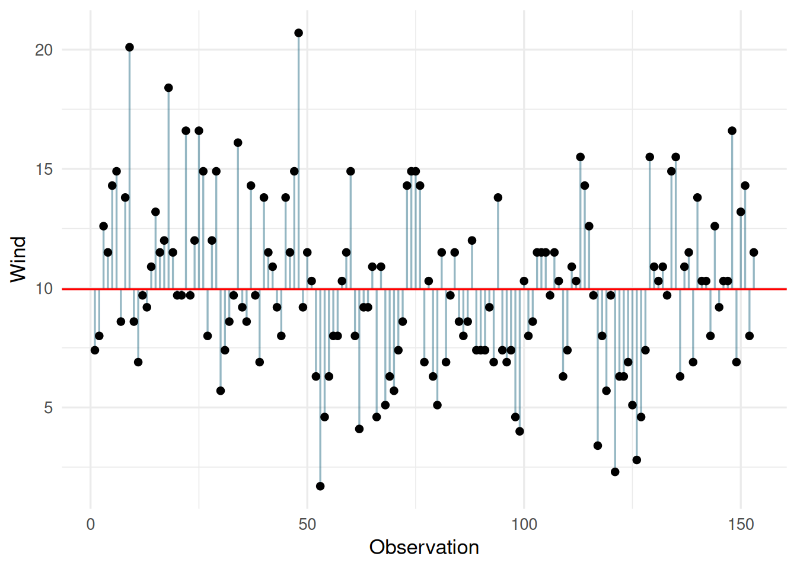
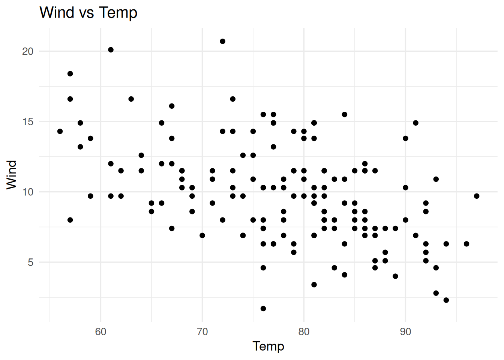
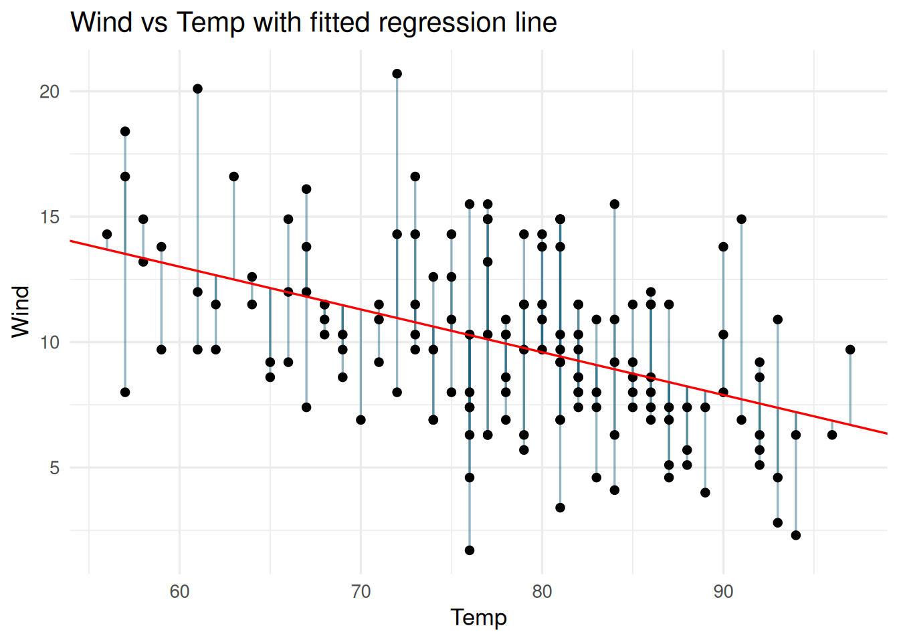
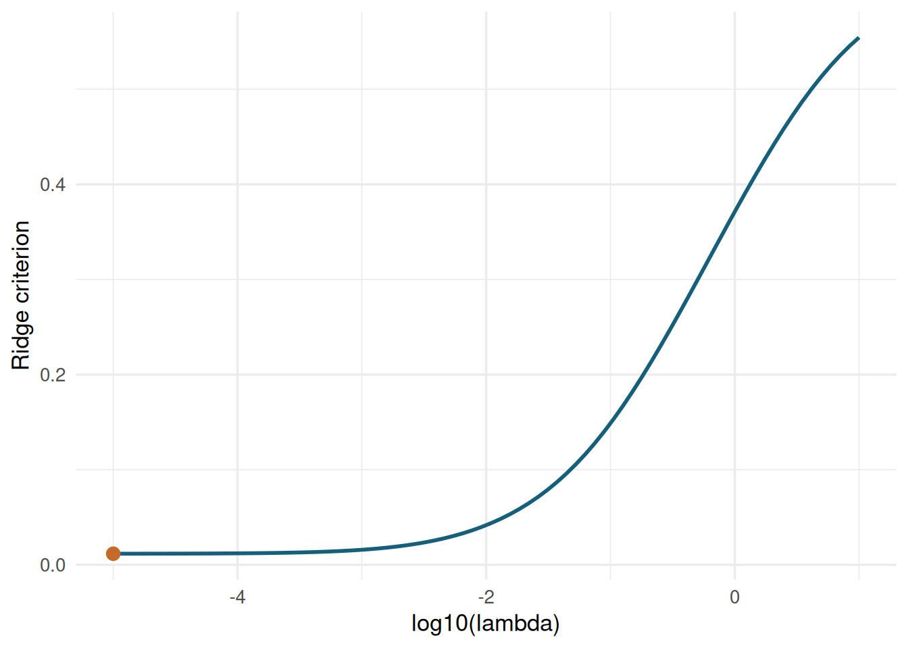
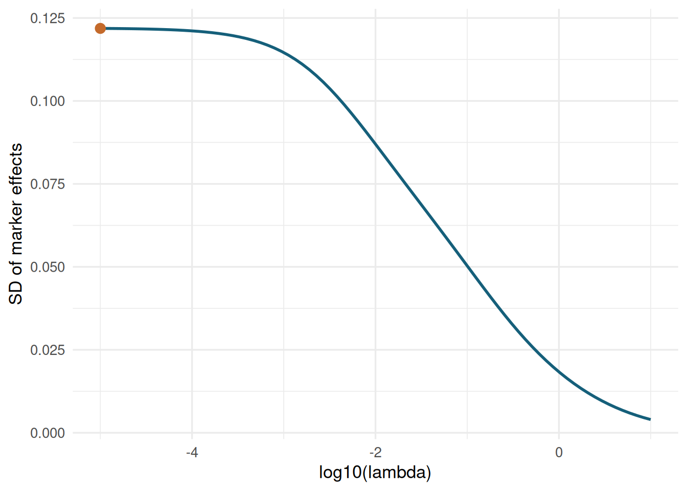

Linear Regression deals with fitting predicted values based on input features and regression weights to observations. In ordinary least squares, we aim to find regression weights that minimize the mean squared error between predicted and observed values:
In the regression plots below, the vertical segments show residuals \(e_i = y_i - \hat{y}_i\). A small toy plot first isolates what the “squares” in least squares mean.
The vector \(x\) contains a “feature” or regression variable that establishes a connection with the observations. We can formulate most regression problems in terms of feature matrices and their estimated weights with respect to predicting the observations.
1.1 Feature / Design Matrix
A Feature or Design Matrix maps observations to individual feature criteria. The most fundamental feature matrix is a column vector with all 1s, meaning every observation has the same expression for that feature. In that case, the feature serves as a mapping to the overall mean of the observations.
We already know how to estimate the mean of y under the assumption of an underlying normal distribution. Now we estimate the mean with a linear regression (“Ordinary Least Squares” = OLS):
# load example datadata(airquality)# our response vector is Windy = airquality$Wind# create a design matrix for the meanX =matrix(data =1, nrow =length(y), ncol =1)colnames(X) ="Intercept"str(X)
# define function to minimize the mean squared error between predicted and observed valuemse <-function(par, y, X) {# the weights are stored in "par", the length of that vector depends# on the number of columns in X (number of features)# predicted value pred = X %*% par# mean squared error mse =mean((y - pred)**2)return(mse)}p <-rep(0, ncol(X))names(p) <-colnames(X)res <-optim(par = p,fn = mse,y = y,X = X )# our solutionres$par
Intercept
9.957812
# plot predicted vs observedpred = X %*% res$pardat =data.frame(y = y,pred =as.numeric(pred),id =seq_along(y) )ggplot(dat, aes(x = y, y = pred)) +geom_point() +geom_abline(intercept =0, slope =1, color ="red") +labs(x ="Observed Wind", y ="Predicted Wind")

ggplot(dat, aes(x = id, y = y)) +geom_segment(aes(xend = id, yend = pred), color ="#155f7a", alpha =0.45) +geom_point() +geom_hline(yintercept = res$par, color ="red") +labs(x ="Observation", y ="Wind")

1.2 Adding Features to the Design Matrix: Multiple Linear Regression
When there is more than one feature in the design matrix we call that Multiple Linear Regression. The overall principle of the problem remains the same: We aim to minimize the mean squared error of our predictions.
# load example datadata(airquality)# our response vector is Windy = airquality$Wind# now we also want another feature: Temptemp = airquality$Temp# create a design matrix for the meanX =matrix(data =1, nrow =length(y), ncol =1)# add temperature as a feature to our design matrixX =cbind( X, temp )colnames(X) =c("Intercept", "Temp")# plot Wind vs Tempggplot(airquality, aes(x = Temp, y = Wind)) +geom_point() +labs(x ="Temp", y ="Wind", title ="Wind vs Temp")

# we can use the same function as before for finding the optimum feature weightsmse <-function(par, y, X) {# the weights are stored in "par", the length of that vector depends# on the number of columns in X (number of features)# predicted value pred = X %*% par# mean squared error mse =mean((y - pred)**2)return(mse)}p <-rep(0, ncol(X))names(p) <-colnames(X)res <-optim(par = p,fn = mse,y = y,X = X )# our solutionres$par
Intercept Temp
23.2314500 -0.1704349
# plot predicted vs observedpred = X %*% res$pardat =data.frame(Wind = y,Temp = airquality$Temp,pred =as.numeric(pred),id =1:length(y) )ggplot(dat, aes(x = Temp, y = Wind)) +geom_segment(aes(xend = Temp, yend = pred), color ="#155f7a", alpha =0.45) +geom_point() +geom_abline(intercept = res$par[1], slope = res$par[2], color ="red") +labs(x ="Temp", y ="Wind", title ="Wind vs Temp with fitted regression line")

ggplot(dat, aes(x = Wind, y = pred)) +geom_point() +geom_abline(intercept =0, slope =1, color ="red") +labs(x ="Observed Wind", y ="Predicted Wind", title ="Observed vs predicted diagnostic")
The ridge parameter \(\lambda\) controls how much we penalize large marker effects. We can visualize the solution space by evaluating the ridge criterion on a grid of \(\lambda\) values.
For a fixed \(\lambda\), ridge regression still has a closed-form solution. If we write the design matrix as \(X = [\mathbf{1}, M]\) and do not penalize the intercept, then
ggplot(ridge_path, aes(x =log10(lambda), y = criteria)) +geom_line(color ="#155f7a", linewidth =1) +geom_point(data = best_lambda, color ="#c46a2b", size =3) +labs(x ="log10(lambda)", y ="Ridge criterion")

As \(\lambda\) increases, marker effects are shrunk more strongly toward zero.
ggplot(ridge_path, aes(x =log10(lambda), y = sd_marker_effect)) +geom_line(color ="#155f7a", linewidth =1) +geom_point(data = best_lambda, color ="#c46a2b", size =3) +labs(x ="log10(lambda)", y ="SD of marker effects")

library(BGLR)data(wheat)subset =1:100y = wheat.Y[subset,2]M = wheat.X# take a subset of columnsM = M[subset,1:300]# design matrix for fixed effects (no shrinkage)X =matrix(data =1, nrow =length(y), ncol =1)colnames(X) ="intercept"# we can use the same function as before for finding the optimum feature weightsmse_ridge <-function(par, y, M, X) {# the weights are stored in "par", the length of that vector depends# on the number of columns in X (number of features)# get expectation from fixed effects b = par[1:ncol(X)] mu = X %*% b# predicted value u = par[(ncol(X) +1):(length(par) -1)] pred = mu + M %*% u# mean squared error mse =mean((y - pred)**2) ridge_param = par[length(par)]# ridge penalty ridge = ridge_param *sum(u**2) criteria = mse + ridge# force ridge parameter to be between > 0if(ridge_param <0) { criteria =9999999 }return(criteria)}# initializep <-c(rep(0, ncol(X) +ncol(M)), runif(1))# give names for pnames(p) <-c(colnames(X), colnames(M), "lambda")res <-optim(par = p,fn = mse_ridge,y = y,X = X,M = M,control =list(maxit =20000),method =c(#"Nelder-Mead"#"BFGS"#"CG""L-BFGS-B"#"SANN"#"Brent" ))# our solutionres$parprint(paste("Ridge Parameter:", res$par[length(res$par)]))# plot predicted vs observed# get predicted valuesmu = X %*% res$par[1:ncol(X)]pred = mu + M %*% res$par[(ncol(X) +1):(length(res$par) -1)]dat =data.frame(y = y,pred = pred,id =1:length(y) )ggplot(dat, aes(x = pred, y = y)) +geom_point()## plot raw data and insert intercept and slope#ggplot(dat, aes(x = Temp, y = Wind)) +# geom_point() +# geom_abline(intercept = res$par[1], slope = res$par[2], color = "red")
Now we compare the results from the optimization to an equivalent mixed model approach with a single randome effect:
library(rrBLUP)mod_rr =mixed.solve(y = y, X = X, Z = M)# ridge parameter from MMEridge_mme = mod_rr$Ve / mod_rr$Vu# preditions from that modelpred_mme = X %*% mod_rr$beta + M %*% mod_rr$uprint(ridge_mme)dat =data.frame(y = pred,pred = pred_mme,id =1:length(y) )ggplot(dat, aes(x = pred, y = y)) +geom_point()